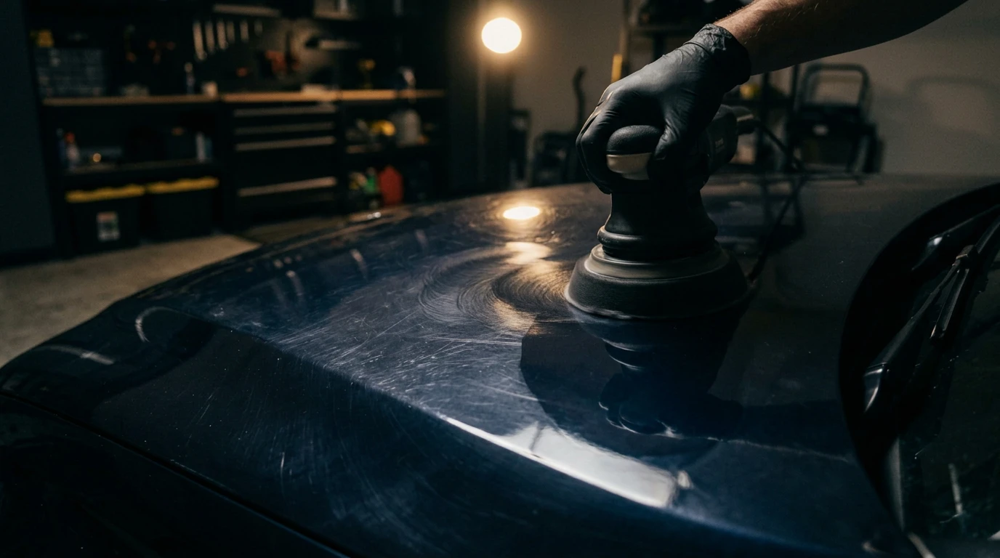
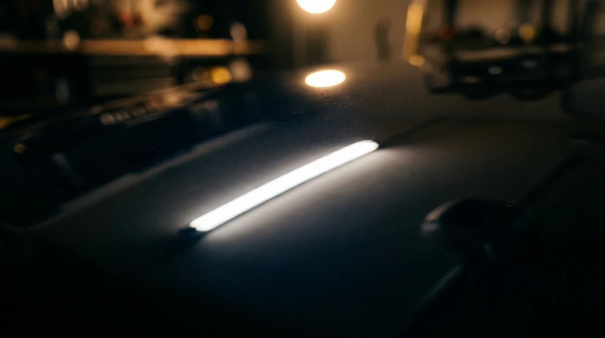
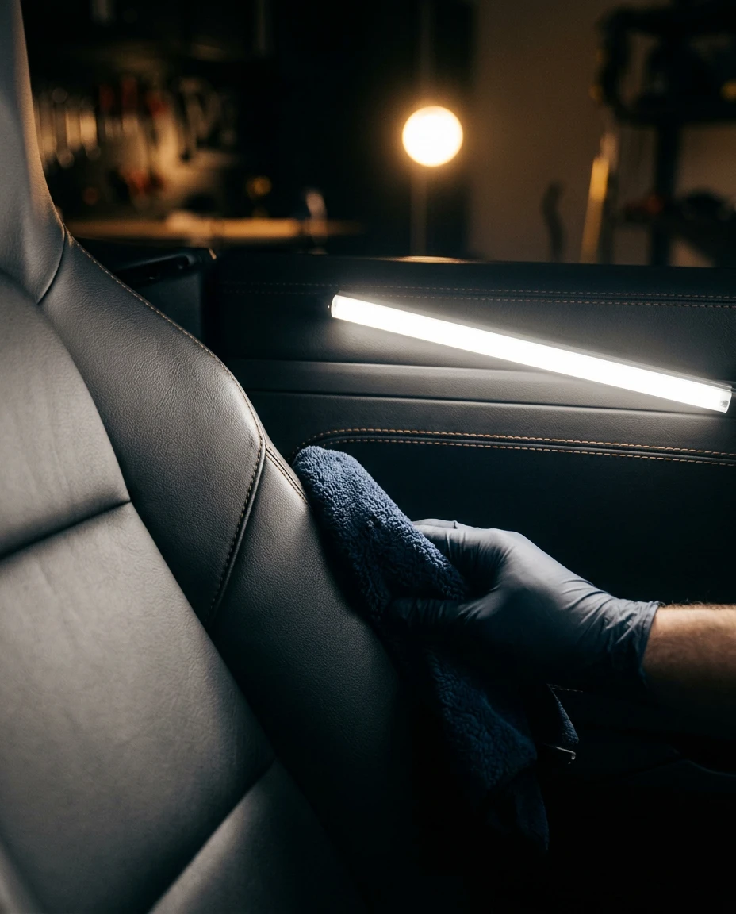

High-end car detailing
Paint that remembers
what new felt like.
Dn'A Detailing corrects, coats and protects, one car at a time, by hand.
Every car tells the truth about how it's been cared for.
Every scratch, visible under one light.
This is where a correction starts.
Services
Three ways we bring it back.

Paint correction
Swirls, scratches and oxidation, machine-polished out in stages.

Ceramic coating
A hard, glossy layer that sheds water and road grime for years.

Interior detailing
Seats, carpets and trim, cleaned and conditioned by hand.
How a detail works
Four stages, every time.
Wash, decontaminate, correct, then seal. Nothing skipped, nothing rushed.